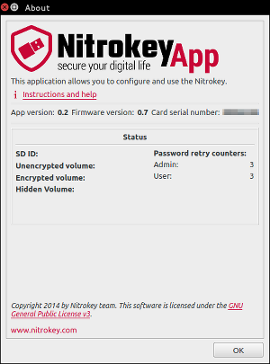
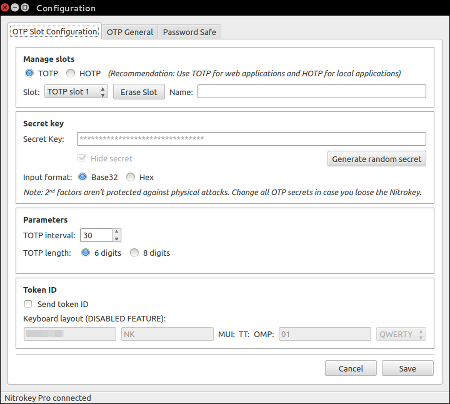

One-time passwords and GnuPG with Nitrokey
A few years ago, the hardware vendor Yubico made a bit of a splash when it introduced its YubiKey line of inexpensive hardware security tokens powered by open-source software. With its most recent product release, however, Yubico has dropped open source and started deploying only proprietary software in its devices. Consequently, many community members have started looking for a viable replacement that will adhere to open-source principles. At present, one of the leading contenders for Yubico's departed customers is Nitrokey, which manufactures a line of hardware tokens capable of generating one-time passwords (OTPs), storing and using OpenPGP keys, and several other features. The devices made by Nitrokey run open-source software and are open hardware as well.
To recap, Yubico had produced YubiKey products for several years and, historically, released its own open-source software for working with the devices. The original devices focused on OTP, and they were popularized by their ability to support the Hash-based message authentication code (HMAC)-based One-Time Password (HOTP) and the Time-based One-Time Password (TOTP) algorithms. HOTP and TOTP were already used in a number of two-factor authentication smartphone apps; the YubiKey's ability to replace a smartphone with a small, lightweight, and nigh-indestructible hardware token was a selling point.
The YubiKey NEO line expanded the available functionality by adding smartcard functionality; applets for OpenPGP and Open Authentication (OATH) were released as open-source software; source code for other applets was available on GitHub (even at that time, it should be noted, the YubiKey firmware itself was not open source). We looked at the YubiKey NEO in April 2014 and at the smartcard functionality in particular again that November.
In late 2015, Yubico released the Yubikey 4 product line,
which—for the first time—did not include source code.
When asked in a GitHub discussion, Yubico employee Dain Nilsson confirmed
that no source release would be made, and that the new devices were
running a proprietary OpenPGP implementation. "We're all for open source, and we try to open source as much of our code as possible when and where it makes sense, but in this case it was determined not to be so.
"
That response drew heavy criticism from around the open-source and free-software community. Included among the critics was kernel.org system administrator Konstantin Ryabitsev, who had helped distribute YubiKeys to kernel developers in 2014 in an effort to tighten up kernel-development security. In May 2016, Ryabitsev publicly withdrew his recommendation of YubiKey over the new, proprietary software. For its part, Yubico responded with a statement contending that trying to ship open-source software was ultimately incompatible with building secure hardware devices.
Enter the Nitro
Regardless of how one feels about Yubico's stance on open
source, though, it is good to know and evaluate the alternatives.

The Nitrokey line started out as a personal side project of Jan Suhr and Rudolf Böddeker, but was taken commercial in 2014. At present, the company makes three devices: the Nitrokey Start (which is a GnuPG-compatible USB smartcard), the Nitrokey Pro (which combines smartcard and OTP functionality), and the Nitrokey HSM (which is a secure key-storage token designed to hold up to 108 key pairs).
The company also offers the Nitrokey U2F, which is a rebranded third-party token for use with the Universal 2nd Factor (U2F) OTP protocol. Nitrokey makes neither the hardware nor the software for that device. A fifth product has been announced but not yet released: the Nitrokey Storage, which combines the functionality of the Pro with a built-in encrypted mass-storage volume.
Nitrokey was kind enough to send us a Pro device to test with. Physically, the key is the size of a smallish USB drive, making it fatter than a YubiKey but still not large enough to impede plugging something in to a neighboring port. The device case is plastic and has seams running lengthwise down the sides; the site highlights Nitrokey's tamper-resistance, but that feature appears to apply only to the contents of the smartcard element. Attackers might be able to crack open the plastic case without destroying the chips inside, and in various places the documentation notes that OTP secrets are not saved in tamper-proof storage.
On Linux systems, the Nitrokey Pro requires only a small amount of setup: adding a udev rule to match the device's ID and adding the vendor and product IDs to the /etc/libccid_Info.plist file, which is used by the Chip/Smart Card Interface Devices (CCID) library. Subsequently, one can plug in the Nitrokey and configure it through the Nitrokey App program, which the company provides in native packages for a number of distributions as well as in a Snap package.
OTP and traditional password usage
The App lets users manage HOTP/TOTP configuration and save passwords in a built-in password safe. The Pro includes slots for 15 separate TOTP configurations, three additional HOTP configurations, and 16 password slots. For the HOTP and TOTP slots, users can adjust the update interval and several other parameters. The password safe provides fields to store usernames and identifiers for the site or service, and the App includes a tool to generate random passwords.
In general, the password-storage and OTP functionality depends on using Nitrokey on a system with the official Nitrokey App installed; one must open the app, move to the tab of interest, copy the necessary OTP or password to the clipboard, then paste it into the appropriate application or login page.
But it is also possible to configure the Nitrokey to emit the OTP
from either the first or second HOTP slot whenever a special key
sequence is pressed. In the version of the Nitrokey App I tested, the
key-sequence options available were double pressing NumLock,
CapsLock, and ScrollLock. Once configured in
Nitrokey App, the device can be plugged in and will appear to the
system as a USB keyboard, where it will monitor the input layer,
watching for the specified key sequence.

That last feature feels like something of an afterthought, given its odd limitations (such as supporting the first two HOTP slots but not the third), but perhaps there is simply room for improvement. In comparison to the YubiKey NEO, the Nitrokey unquestionably wins the configuration contest. The NEO provides just two configurable slots and, as mentioned in our November 2014 coverage, using the NEO for TOTP requires pairing it up with a separate application that does not store the TOTP secrets on the device.
On the other hand, the NEO includes NFC support, so its TOTP support can be used with an Android app (given an NFC-capable phone) as well as with a desktop application, and the Nitrokey evidently stores OTP secrets where they could theoretically be removed by an attacker with physical access to the device. Still, the greater number of configuration slots on the Nitrokey are a welcome change, and the password-safe functionality is useful as well.
Smartcard usage and development
The Nitrokey Pro also includes a smartcard element conforming to the OpenPGP card standard. At present, there are two use cases supported: using the card directly with GnuPG (or with OpenSSH, which can use GnuPG as an authentication agent), and using the card with a PKCS #11 driver.
Like most GnuPG-compatible cards, the Nitrokey's smartcard's storage element provides three key-storage slots that are designed to serve as subkeys attached to a single identity. The Nitrokey does support RSA key lengths of up to 4096 bits, however, in comparison to the YubiKey NEO's 2048 bits. Keys can be generated on the card or imported with the GnuPG command-line tool.
A PKCS #11 driver can be used instead, which opens the door to using the Nitrokey with several applications beyond GnuPG and SSH. The documentation notes, though, that for best results one should generate keys with GnuPG. Subsequently, those key slots can be accessed by the PKCS #11 driver from the OpenSC project. The reverse situation—initializing the card with OpenSC then trying to use with GnuPG—will not work, however.
The reason for this is that the OpenSC tools initialize the card in a different format, which GnuPG cannot read. If the card is initialized with GnuPG and the slots filled with GnuPG RSA keys, though, OpenSC can still be used to access the slots. However, if one wants to use the Nitrokey with applications that require a different type of key material (such as TLS certificate authority (CA) keys or X.509 certificates), then initializing the card for PKCS #11 is the only option.
The documentation goes on to warn users against using PKCS #11 and GnuPG in parallel, and notes a few alternative PKCS #11 projects that may someday prove more useful than OpenSC's offering.
At the moment, the Nitrokey site does not offer guidance to developers interested in writing and uploading their own smartcard applets. However, the Nitrokey does ship with a known administrator password (which the user can change), so it should be possible for knowledgeable users. The company's wiki on GitHub notes several possibilities, including switching from the OpenPGP card format to Java Card, which is a more flexible platform. In contrast, the Yuibkey NEO does use Java Card, but the devices are locked so that users can not upload their own—or update existing—applets.
For standard uses, the Nitrokey Pro is easily the equivalent of the
YubiKey NEO, if one is comfortable giving up NFC support and the
NEO's external "emit the password" button. In exchange, one gets
longer GnuPG keys, PKCS #11 support, and more configurable OTP
and password slots. Far more importantly, however, the makers of
Nitrokey have committed to keeping the product line running entirely
on open-source software, and have released the hardware
design as well. For the security conscious, the choice is simplified.
| Index entries for this article | |
|---|---|
| Security | Authentication |
Posted Jul 27, 2016 21:51 UTC (Wed)
by corsac (subscriber, #49696)
[Link] (8 responses)
Posted Jul 28, 2016 14:18 UTC (Thu)
by drag (guest, #31333)
[Link] (7 responses)
For GnuPG applications, I donno. For personal use I don't see it as a big problem provided you never let the thing off your person while in public with it. If you are paranoid then I suppose you could use potting material or epoxy to encase the board (beware of differentials in thermal expansion for surface mount components) to make the device tamper-resistant and tamper-evident.
Posted Jul 28, 2016 20:21 UTC (Thu)
by roc (subscriber, #30627)
[Link] (5 responses)
Posted Jul 28, 2016 21:31 UTC (Thu)
by drag (guest, #31333)
[Link] (3 responses)
Getting the key stolen/lost is a issue, I think, with GnuPG type things, but it's really not a issue with OTP.
However having a secure processor is certainly 'nice to have' and would probably increase the usefulness of the device in the long run. I am curious what barriers to adoption it has right now; cost? practical limits to reprogramming the device?
Posted Jul 28, 2016 21:49 UTC (Thu)
by corsac (subscriber, #49696)
[Link] (1 responses)
Posted Jul 29, 2016 10:50 UTC (Fri)
by Lekensteyn (guest, #99903)
[Link]
[1]: https://github.com/Nitrokey/nitrokey-pro-hardware/blob/ma...
Posted Jul 29, 2016 5:34 UTC (Fri)
by roc (subscriber, #30627)
[Link]
I agree this is not something most people would have to worry about.
Posted Jul 29, 2016 8:59 UTC (Fri)
by ballombe (subscriber, #9523)
[Link]
Posted Jul 29, 2016 17:04 UTC (Fri)
by kreijack (guest, #43513)
[Link]
If so, in what nitrokey is different from a... mass storage usb key equipped with a program which is executed by the host ? or an app in your phone ?
I think that to be not cloneable is the key factor for this kind of gadget.
Posted Jul 27, 2016 23:51 UTC (Wed)
by jhoblitt (subscriber, #77733)
[Link] (1 responses)
Posted Aug 1, 2016 18:31 UTC (Mon)
by davidstrauss (subscriber, #85867)
[Link]
Posted Jul 28, 2016 3:57 UTC (Thu)
by raymii (guest, #94468)
[Link]
I've also got in contact with Jan from Nitrokey (and Andreas from SmartCard-HSM) and they've been very friendly and helpfull in answering questions and general feedback on the product.
The hardware quality of the Nitrokey is superb as well. It doesn't feel like flimsy chinese crap at al, but a sturdy, quality made USB device. I do believe it's made in germany, I saw a youtube video once on it.
The forum is also great for information, questions and guides: https://www.nitrokey.com/forum/
Posted Jul 28, 2016 8:40 UTC (Thu)
by kruemelmo (guest, #8279)
[Link] (11 responses)
Posted Jul 28, 2016 9:05 UTC (Thu)
by Gollum (guest, #25237)
[Link] (1 responses)
A USB Keyboard will receive notifications from the OS that another keyboard has pressed the toggle buttons, so that all keyboards can stay in sync in that regard. That doesn't give the other devices access to any of the other keys that were pressed.
Posted Jul 28, 2016 10:06 UTC (Thu)
by kruemelmo (guest, #8279)
[Link]
Posted Jul 28, 2016 10:18 UTC (Thu)
by mfuzzey (subscriber, #57966)
[Link] (8 responses)
However a USB device can intercept traffic from the same host controller to other devices. But it doesn't work in the other direction (a device can't intercept data from other devices to the host controller). This means that a rogue device connected to the same host controller / root hub could, for example, intercept data you are writing to a thumb drive but not data you are reading. The asymmetry is because hubs broadcast everything in the host=>device direction. I think this has changed in USB 3 though.
Also a USB device can enumerate as a keyboard whilst pretending to be something else. That allows it to inject fake keystrokes, but not intercept real keystrokes.
Posted Jul 28, 2016 11:35 UTC (Thu)
by Gollum (guest, #25237)
[Link] (6 responses)
Posted Jul 28, 2016 12:34 UTC (Thu)
by cladisch (✭ supporter ✭, #50193)
[Link] (5 responses)
Section 11.1.2.1 of the USB 2.0 specification says: However, when hubs translate between the different bit rates (low/full/high/super/super+ speed), they do care about the destination port.
Posted Jul 28, 2016 13:16 UTC (Thu)
by Gollum (guest, #25237)
[Link] (4 responses)
Posted Jul 28, 2016 15:18 UTC (Thu)
by Beolach (guest, #77384)
[Link] (3 responses)
I'm guessing there aren't any USB switches, since USB has a much stronger host/device directionality in its link layer specification than ethernet does, so the extra expense of a switch instead of a hub wouldn't be worth it. But if there are I'd be interested to know.
Posted Jul 28, 2016 18:32 UTC (Thu)
by JanC_ (subscriber, #34940)
[Link] (2 responses)
Posted Jul 28, 2016 21:07 UTC (Thu)
by mathstuf (subscriber, #69389)
[Link]
Posted Jul 29, 2016 8:50 UTC (Fri)
by Gollum (guest, #25237)
[Link]
More like something that intelligently directs traffic from the host to the targeted USB device ONLY, rather than broadcasting it to all devices on the same hub (as the spec indicates should happen).
From a security perspective, this could hypothetically allow a malicious device to snoop on things like passwords being sent to a security token to unlock it, scrape data being written to a flash drive. eavesdrop on network traffic sent to a 3G dongle, etc, etc.
Posted Jul 28, 2016 19:29 UTC (Thu)
by corsac (subscriber, #49696)
[Link]
Posted Jul 28, 2016 12:09 UTC (Thu)
by nix (subscriber, #2304)
[Link] (1 responses)
Posted Aug 4, 2016 2:14 UTC (Thu)
by ras (subscriber, #33059)
[Link]
Give me Yubikey like thingy that did the same trick, albeit with battery and bluetooth keyboard emulation added on (particularly if you could recharge the batter from USB), and I'd be in heaven.
Does anybody know if such a thing exists?
Posted Jul 28, 2016 13:40 UTC (Thu)
by mricon (subscriber, #59252)
[Link] (2 responses)
1. The old-school PGP SmartCard (G10) and reader (Gemalto) from KernelConcepts.de -- unless you have a builtin reader. Most standard smartcard readers will do, I believe -- definitely for the 2048-bit cards. The only downside of buying from kernelconcepts.de is having to wait for 3 weeks for the shipment from Germany, so I would order 2 and make sure I have a backup card.
Posted Jul 28, 2016 15:33 UTC (Thu)
by mjg59 (subscriber, #23239)
[Link]
Posted Jul 29, 2016 2:33 UTC (Fri)
by nakato (guest, #96556)
[Link]
Posted Jul 29, 2016 10:53 UTC (Fri)
by misc (subscriber, #73730)
[Link] (1 responses)
It is a shame that openssh agent do not support ECDSA key with pkcs11 yet ( https://bugzilla.mindrot.org/show_bug.cgi?id=2474 ).
Posted Aug 11, 2016 17:54 UTC (Thu)
by gdamjan (subscriber, #33634)
[Link]
Posted Aug 1, 2016 9:42 UTC (Mon)
by plundra (guest, #51099)
[Link] (8 responses)
Posted Aug 1, 2016 11:51 UTC (Mon)
by DigitalBrains (subscriber, #60188)
[Link] (7 responses)
Here's a simple counter-example. You want to open encrypted document A on the compromised PC (you don't know that last bit), but you want to avoid your attacker reading the much more important document B, which you only open on fully trusted PC's. Unfortunately, your attacker got the encrypted document B. No biggy, it's encrypted.
You open document A on the compromised PC. Your smartcard decrypts when you press the button. The attacker controls the PC and saves the symmetric encryption key for document A.
Two days later, you wish to read something in document A again. The attacker-controlled PC asks the smartcard to decrypt document B, and you press the button, so it does. Meanwhile the PC uses the symmetric key it logged earlier to open document A for you, and you are under the impression you only ever authorized two decryptions of document A. You think you never decrypted document B so conclude your attacker can't have it, but they do.
There are more methods that will likely succeed. This is just my favourite one.
Posted Aug 1, 2016 14:17 UTC (Mon)
by farnz (subscriber, #17727)
[Link] (4 responses)
It does, however, limit the number of uses the attacker can make of the smartcard's function - they are limited to one use for each time you can be convinced to touch the button.
When you combine that with suitable logging, you can produce yourself a timeline of the form "On 29th July 2016, $system logged that it had had 201769 pushes of the button. On 30th July 2016, $system was broken into leaving malware; we detected this on 2nd August 2016, and after removing the button from the compromised system, determined it had had 201775 pushes of the button. We thus can deduce that the attacker could only have performed a maximum of 6 OpenPGP operations with this key".
If you can then identify all 6 operations without trusting the compromised machine, you now know the full extent of the fallout form the compromise - for example, if you can find 6 unique "sign" operations that took place during the compromise, you're clear. Equally, if you have 4 signs, 2 decrypts, and you can show that each decrypt was of a fresh, previously never decrypted document, you're clear. If you have 4 signs, and 2 decrypts of the same document, you now know that the attacker has up to 2 session keys or signatures that are unauthorised.
Posted Aug 1, 2016 16:12 UTC (Mon)
by DigitalBrains (subscriber, #60188)
[Link] (3 responses)
Let's assume a user has all this infrastructure in place... and let's assume you want the counter to be correct. If all you're after is limiting the amount of uses of the smartcard, rather than counting them, skip right down to the TL;DR at the bottom ;).
It seems to me you need a proper log of operations. In your example, you discovered the compromise after three days. I'd consider three months more likely, if at all. I'm not talking about a script kiddy, they don't do anything interesting with your smartcard anyway. We're talking about an invested attacker, a good one. They are targetting you and your private keys specifically.
How safe is this log of signatures and decryptions? If it's kept on the same compromised PC, we seem to agree you can cheat. So the user needs a secure PC to check the log, often enough that they can spot discrepancies between what they did and what the log says. You also should check every signature you've made.
> Equally, if you have 4 signs, 2 decrypts, and you can show that each decrypt was of a fresh, previously never decrypted document, you're clear.
I think you'd probably like to be able to access a document multiple times. "Ah, this Thursday we have a meeting." *Closes e-mail*. "Oh wait, was it at 15:00 or 15:30, what did it say again?" *Opens e-mail again*.
So supposing you actually like to read a document multiple times, I think you should save a log of session keys yourself. Do you encrypt this log of session keys? In that case you're back to square one: you still need to use your smartcard, and the trick could be applied again. So you should protect the log of session keys with something like a normal password, not your smartcard. You also need to be able to share this log of session keys between all computers you don't fully trust, since the attacker could control two PC's and share *their* secret log of your session keys.
And what when there's an intermittent failure? USB sticks and especially smartcards have this tendency to once in a while fail. No problem: you press the button again, or replug the stick. Except if you're paranoid enough. Then you need to consider this failure as a compromise: it certainly didn't do the decryption or signature you requested from it. Was it really just a soft failure, or did somebody just decrypt or sign something?
And does the button have good mechanical feedback? Can you tell with 100% certainty whether you pushed it well enough? Or did the stick wiggle in the slot and did you slip over the button?
Anyway, this all requires a major amount of user discipline. Checking the log, making sure a keypress is a keypress, plus the tendency of seasoned computer users that when it fails, you simply try again without giving it much thought.
And I think it's pretty much a lost case in the case of authentication. Surely you'd like to log in to a machine multiple times. The attacker could surf on your legitimate login, and either install a method to do login without smartcard auth or simply leave the connection open. Next time you login, it connects you to the target machine using something else than your smartcard authentication token, and uses your press of the smartcard button as they see fit.
I'm sure you could think of "aha, but what if you do ..." for almost every way an attacker could try to coax you into pressing the button for them, but how realistic is it that someone with a Yubikey actually does *all* those things, each and every time, without fail? And I'm not convinced a suitably clever attacker can't think of something that would instantly become my new favourite because there is no "but what if" to. Unfortunately I would probably never know, since the people spending the most time thinking about this are not always the people to warn others of it.
TL;DR: I think it boils down to: you limit the amount of signatures or decryptions an attacker can do. How many signatures or decryptions does it take to do something really bad? For free software developers: I think you need just one signature to insert a backdoor into some system, and the backdoor does the rest of the job without needing any more signatures.
Posted Aug 1, 2016 16:34 UTC (Mon)
by farnz (subscriber, #17727)
[Link] (2 responses)
I know that my work laptop reports back the use counter from my work Yubikey. I don't know how it's done, but I can see the use count for my Yubikey in internal logging, and I know that IT react to this if the use count jumps too quickly.
And yes, it boils down to "how many accesses does the attacker need to compromise a system"; equally, though, the use of a hardware token and multiple keys (short press for "day-to-day" key, long press for "external release key", for example) means that a compromise does not necessarily reveal the key the attacker needs. Without other means to combat intrusion, it's not enough - as you point out, I can piggyback on a legitimate session - but it time bounds the attacker's access because the moment they lose access to my machine, they lose access to future session keys. This is enough to be useful - granted, you may be able to access all confidential e-mails sent to me in 2016, but, without having to get my correspondents to change the key they use, I can be assured that you can't get at the 2018 e-mail, as you don't have the private key, and I've closed your intrusion vector and rebuilt the compromised systems from trusted media.
Posted Aug 1, 2016 16:53 UTC (Mon)
by DigitalBrains (subscriber, #60188)
[Link] (1 responses)
I think this is ultimately the use case of a smartcard. It limits access to the key to the time frame where the attacker has access to the smartcard. For this use case, you don't need the button, though, or am I not fully understanding your intention?
By the way, I still keep a backup of my encryption key, it doesn't just exist in the smartcard. So the premise of "no way to copy the key" is weakened, but at least I can store this backup securely, I don't actually need it normally. However, smartcards will die eventually. You can re-issue signature and authentication keys, but loss of your encryption key equals loss of all files that are only encrypted to that key!
Posted Aug 1, 2016 17:21 UTC (Mon)
by farnz (subscriber, #17727)
[Link]
The button increases the chance of the attacker being noticed - if your token suddenly needs two button presses to make it work instead of the previous one, you're more likely to suspect a problem and investigate. When diagnostics in a clean machine shows that the token is fine, and a fresh token shows the same failure on your compromised machine, the machine becomes questionable, and even if you replace it because you suspect hardware failure (not software), the attacker still loses for a time period. Not something you can rely on in a security analysis, but valuable for the cases where the compromise required the attacker to have physical access (e.g. an opportunistic attack when you left your laptop unlocked in a bar when you went to buy another beer).
Plus, it makes life harder for the attacker, because they now not only have to account for your smartcard's presence, they also have to account for whether or not you're willing to push the button; while a security analysis has to assume that you pressed the button every time the attacker needed you to (because that's the worst plausible case), the actual chances of getting away unscathed increase (because you might not have actually pushed the button when they needed you to). Again, not something you can rely on in a security analysis, but an improvement in the real world.
Posted Aug 1, 2016 15:00 UTC (Mon)
by plundra (guest, #51099)
[Link] (1 responses)
But yes, encryption thing is worth noting for sure, haven't really thought about that.
Posted Aug 1, 2016 16:20 UTC (Mon)
by DigitalBrains (subscriber, #60188)
[Link]
For authentication, my impression of what could happen is in the wall of text I just posted above here, near the end.
However, for signatures, realise that what you sign is ultimately a bunch of bytes, and the interpretation of those bytes might differ depending on what program is reading them. What in one file format might be harmless and more importantly unseen metadata like a comment field, might in another format actually do something harmful, something which you just authorized when you signed that binary that the compromised PC presented to you.
Posted Dec 23, 2017 15:49 UTC (Sat)
by Gee-Gee (guest, #120415)
[Link]
One-time passwords and GnuPG with Nitrokey
One-time passwords and GnuPG with Nitrokey
One-time passwords and GnuPG with Nitrokey
One-time passwords and GnuPG with Nitrokey
One-time passwords and GnuPG with Nitrokey
One-time passwords and GnuPG with Nitrokey
One-time passwords and GnuPG with Nitrokey
One-time passwords and GnuPG with Nitrokey
One-time passwords and GnuPG with Nitrokey
> Even if you lose the card it doesn't mean that they gain access. They still need to get your password.
One-time passwords and GnuPG with Nitrokey
One-time passwords and GnuPG with Nitrokey
One-time passwords and GnuPG with Nitrokey
"monitor the input layer"
"monitor the input layer"
"monitor the input layer"
thanks!!
"monitor the input layer"
"monitor the input layer"
"monitor the input layer"
In the downstream direction, hubs operate in a broadcast mode. When a hub detects the start of a packet on
its upstream facing port, it establishes connectivity to all enabled downstream facing ports.
"monitor the input layer"
"monitor the input layer"
"monitor the input layer"
"monitor the input layer"
"monitor the input layer"
"monitor the input layer"
One-time passwords and GnuPG with Nitrokey
One-time passwords and GnuPG with Nitrokey
One-time passwords and GnuPG with Nitrokey
2. If you're in the US and don't want to wait for your PGP smartcard, you can alternatively get a Sigilance smartcard (https://www.sigilance.com/). Due to crypto export laws, they won't ship internationally. You'll also need a reader, and their cards are capable of maximum 2048-bit keys.
3. There's Gnuk (http://www.fsij.org/category/gnuk.html), which looks interesting but it's not a product you can buy. It's software you can install on a DYI-type board.
4. Finally, if you're already into cryptocurrency and are looking to get a hardware wallet, Trezor (https://bitcointrezor.com/) has builtin PGP functionality. It's both rather expensive and on the large side, so it's not something I would recommend for someone just for PGP storage.
One-time passwords and GnuPG with Nitrokey
One-time passwords and GnuPG with Nitrokey
One-time passwords and GnuPG with Nitrokey
One-time passwords and GnuPG with Nitrokey
One-time passwords and GnuPG with Nitrokey
So in case your computer is compromised, an attack may sniff the password to unlock the card, but won't be able to sign, decrypt or authenticate using the card willy nilly.
One-time passwords and GnuPG with Nitrokey
One-time passwords and GnuPG with Nitrokey
One-time passwords and GnuPG with Nitrokey
One-time passwords and GnuPG with Nitrokey
One-time passwords and GnuPG with Nitrokey
One-time passwords and GnuPG with Nitrokey
One-time passwords and GnuPG with Nitrokey
And of course you can still be tricked to do such a thing, but hopefully you notice if the thing you wanted to authenticate against or sign wasn't, and that someone might have "used" the touch confirmation for its own use.
One-time passwords and GnuPG with Nitrokey
One-time passwords and GnuPG with Nitrokey